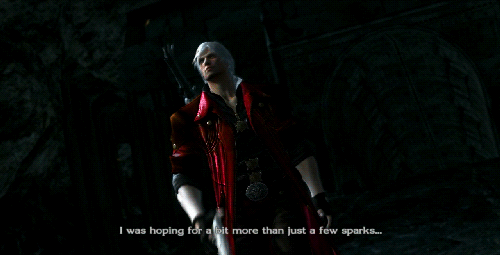

Nero es un joven que trabaja como un cazador de demonios para el La Orden de la Espada que adora al Legendario Caballero Oscuro Sparda como un dios.Cuando va a la Casa de la Ópera de ver a su interés romántico Kyrie realizar para La Orden de la ceremonia de la Espada, el sumo sacerdote de la Orden Sanctus es asesinado por Dante , hijo de Sparda, que aparece de repente después de estrellarse a través de una claraboya. De la Orden Caballeros Santos, encabezados por el hermano mayor de Kyrie Credo, tratan de someter a Dante, pero él los derrota fácilmente. Prometiendo volver con ayuda, Credo toma Kyrie a la seguridad y deja Nero para detener Dante. Aprovechando su poder demoníaco latente, Nero abruma Dante. Impresionado, Dante (antes de salir) revela que los miembros Santos Caballeros que mató eran en realidad demonios. Credo da Nero la tarea de detener a Dante en el castillo de Fortuna.
En el castillo, Nero descubre que la Orden de Agnus de la Espada en secreto ha estado experimentando con el poder demoníaco utilizando la energía demoníaca de Yamato, la espada perdida hace mucho tiempo que pertenecía al hermano de Dante, Vergil. Agnus ha creado un ejército de demonios infundido guerreros y varios infierno Gates, a través de Fortuna a las órdenes del mismo Sanctus que ha revivido como un demonio. Nero lucha Agnus desbloquear totalmente sus propios latentes demoníacas poder gracias a Yamato. Cuando Agnus huye a la Sede, Nero lo sigue y trata de armar el plan de La Orden que implica el infierno Gates. Él descubre que Credo es parte de la conspiración, que tiene igualmente convertido en un demonio. Credo ha sido encargado por Sanctus para detener Nero, mientras que Gloria ha tomado el trabajo de Nero de la caza de Dante. Sin embargo, Credo detiene su misión cuando Agnus utiliza Kyrie como cebo para capturar Nero.
Nero decide salvar Kyrie del Sanctus, pero se encuentra con Dante, que le pone a prueba en la lucha para ver si él es digno de Yamato. Dante gana esta vez, pero deja Nero retener Yamato. Nero encuentra Sanctus en la Sede con una enorme estatua, que Sanctus llama "El Salvador". Sanctus revela que sólo el Yamato y el legendario Sparda Espada, junto con la sangre de Sparda puede despertar el Salvador. Después de haber recibido el Sparda Espada de Gloria, Sanctus procede a absorber Nerón, que tiene sangre de Sparda. Usando Kyrie como escudo humano para distraer Nero, logra capturarlo. Credo intenta rescatar a Nero y Kyrie, pero está herido de muerte por Sanctus. Aparecen Dante y Trish su pareja, reveló que Gloria,, incapaz de detener el proceso, y la promesa de Credo en sus momentos finales de ahorrar Kyrie y Nero.
Debajo de la ciudad, Agnus abre la verdadera puerta del infierno con Yamato, que libera innumerables demonios. Usando El Salvador a derrotar a los demonios que se aproximan, Sanctus planea fortalecer la adoración del pueblo, actuando como su salvador. Dante tiene éxito en la destrucción de todas las falsas puertas Agnus creado, y lo mata. Después de la recuperación de Yamato, Dante se involucra Sanctus. Dante toma Yamato y lo conduce a través del pecho del Salvador, liberando a Nerón, que reclama que el interior El Salvador. carreras en las que al Corazón del Salvador donde Sanctus espera, con Kyrie como su prisionero. Frente a Sanctus, Nero guarda Kyrie y ambos escapan de los confines de el Salvador. Las despierta Salvador, habiendo absorbido el alma de Sanctus. La destrucción de este demonio final, Nero finalmente hace las paces con su herencia demoníaca después de reconocer el poder que le ha dado para salvar a los que le importa.Dante le confía Yamato antes de partir. Nero y Kyrie luego conciliar en las ruinas de Fortuna.
En la escena de los créditos de correos, Señora hace una parada en la oficina de Devil May Cry. Ella había contratado a Dante y Trish para investigar las intenciones de la Orden, pero les da una pequeña recompensa por darles Sparda a la Orden en un intento de acercarse a ellos. La discusión de tres paradas después de recibir una llamada que implica un nuevo trabajo.


 ver la mitad del amuleto que Dante lleva. Este demonio ataca dos veces más en
ver la mitad del amuleto que Dante lleva. Este demonio ataca dos veces más en